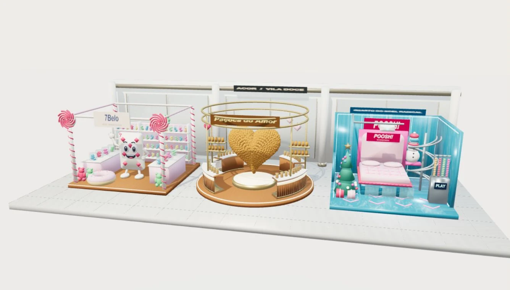
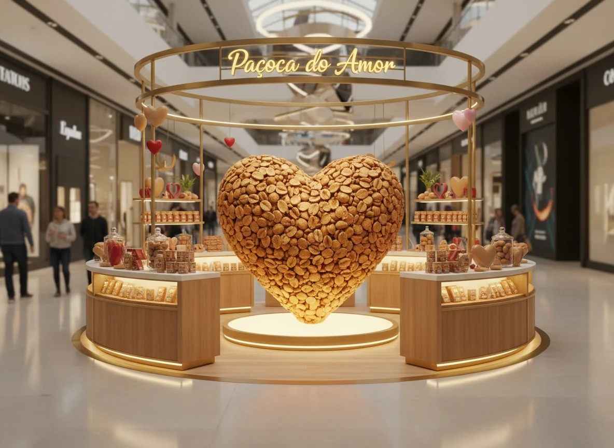
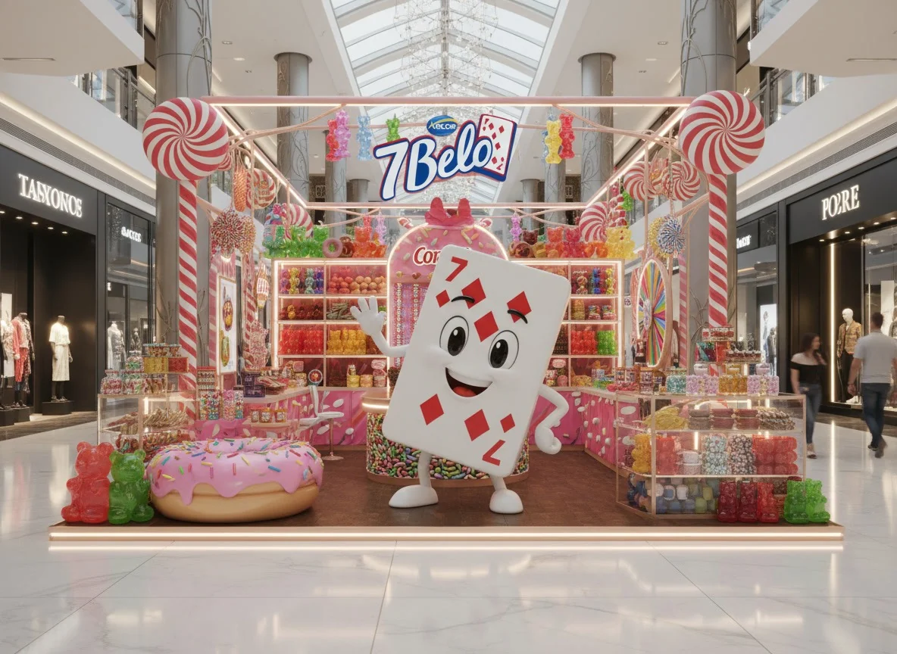
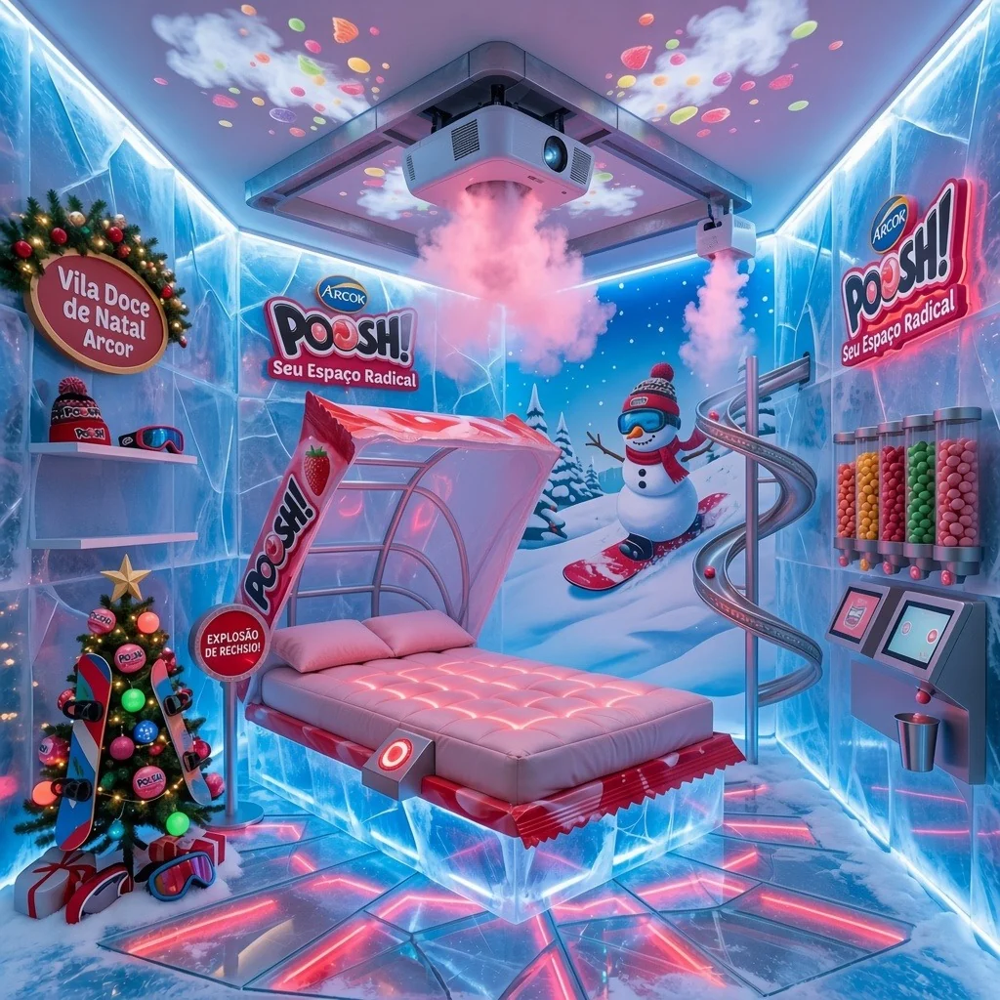

EXPERIÊNCIA ARCOR · EM TRÊS DIMENSÕES
Seu próximo destino?
Um universo doce.
Explore nosso projeto em três dimensões.

Conheça o projeto em imagens ou assista ao protótipo.
Assistir ao vídeo ↗Arraste para explorar · Role para aproximar · Use as setas do teclado para girar
DA MARCA
PARA O ESPAÇO.
Doce também
pode ser espaço.
ARCOR é um projeto que transforma a identidade de três marcas em experiências físicas.
Paçoca do Amor, 7 Belo e Poosh! deixam de existir apenas como produtos e ganham arquitetura, cenografia, interação e tecnologia dentro do ambiente de um shopping.



02 / UMA EXPERIÊNCIA CONECTADA
UMA ENTRADA.
TRÊS UNIVERSOS.
Pensadas para uma região próxima à entrada do shopping, as instalações criam impacto desde o primeiro contato. Cada espaço tem sua personalidade. A descoberta é uma só.
ENTRADA DO SHOPPING
IMPLANTAÇÃO CONCEITUAL · SELECIONE UM UNIVERSO PARA CONHECER
PAÇOCA
DO AMOR.
Quando o amor
ganha forma.
Uma identidade
que você pode
percorrer.
A Paçoca do Amor ganha uma interpretação arquitetônica criada para transformar sua identidade em espaço.
No centro da experiência, um grande coração formado visualmente por amendoins conecta o amor presente no nome da marca ao ingrediente que caracteriza a paçoca.
Arquitetura, iluminação, materiais e decoração trabalham juntos para criar um ambiente acolhedor e marcante. A proposta vai além de apresentar o produto: o visitante entra fisicamente nesse universo.
7 BELO
ENTRE NO
MUNDO DOS
DOCES.
MUITAS
LEMBRANÇAS. ↗
O espaço da 7 Belo transporta o visitante para um universo inspirado em balas e doces.
Cores vibrantes, iluminação marcante, formas divertidas e elementos cenográficos constroem uma atmosfera lúdica desde o primeiro contato.
O encontro
tem personagem.
No centro da instalação, o mascote em formato de carta é ponto de referência, personagem da experiência e cenário para fotografias.
A visita se transforma em uma lembrança.
POOSH!
QUARTO DO
NOEL RADICAL.
Um Natal congelado.
Uma experiência que acende os sentidos.
O neon desenha o espaço e transforma o gelo em um cenário vibrante.
EXPLORE OS ELEMENTOS DO CONCEITO
O Quarto do Noel Radical transforma o universo da Poosh! em uma experiência imersiva inspirada em um Natal congelado. Cenografia de gelo, iluminação neon e elementos tecnológicos criam uma atmosfera jovem e intensa.
Na proposta, movimentos dos visitantes podem acionar luzes, aromas e projeções. O espaço responde à presença do público, transformando o universo do chiclete em uma experiência multissensorial.
04 / O SEU PERCURSO
VOCÊ NÃO APENAS OLHA.
VOCÊ ENTRA.
O visitante deixa de ser apenas observador. Os espaços foram imaginados para serem percorridos, fotografados e explorados — pela arquitetura, pelos personagens, pela cenografia e pela tecnologia.
- 01
Aproxime-se ↗
O primeiro contato desperta a curiosidade.
- 02
Explore ↗
Cada detalhe revela uma parte da identidade.
- 03
Interaja ↗
Você passa a fazer parte da experiência.
05 / DO ENCONTRO, NASCE A EXPERIÊNCIA
FÍSICO
DIGITAL
A tecnologia
também faz parte
da sensação.
O projeto combina arquitetura e cenografia física com recursos digitais.
Iluminação, projeções, movimento, modelos 3D e interação ajudam cada instalação a desenvolver uma personalidade própria. A tecnologia participa da experiência.
06 / VISUALIZAÇÃO DO PROJETO
POR DENTRO
DO MODELO.
Outra maneira de descobrir o espaço.
Assista à apresentação do protótipo da Paçoca do Amor.
07 / PROCESSO CRIATIVO
COMO UMA IDEIA
VIRA EXPERIÊNCIA?
Daquilo que torna uma marca reconhecível àquilo que torna um espaço memorável.
- 01
Identidade
Encontramos os elementos que tornam cada marca reconhecível.
- 02
Conceito
Transformamos esses elementos em ideias de experiência.
- 03
Espaço
As ideias ganham arquitetura, circulação e cenografia.
- 04
Modelo 3D
O projeto é transformado em um ambiente tridimensional.
- 05
Experiência
Todos os elementos se encontram em uma apresentação interativa.
08 / OLHE MAIS DE PERTO
DESIGN QUE
PODE SER VIVIDO.
Três identidades.
Um convite para explorar.
SELECIONE UMA IMAGEM PARA AMPLIAR ↗
Uma marca
pode ser
visitada.
TRÊS IDENTIDADES. UMA EXPERIÊNCIA.
MAIS DO QUE
MOSTRAR.
FAZER
EXPERIMENTAR.
Cada instalação utiliza identidade visual, arquitetura, cenografia e interação para transformar produtos conhecidos em ambientes que podem ser explorados.
Três propostas conectadas pela mesma ideia: transformar uma marca em uma experiência.